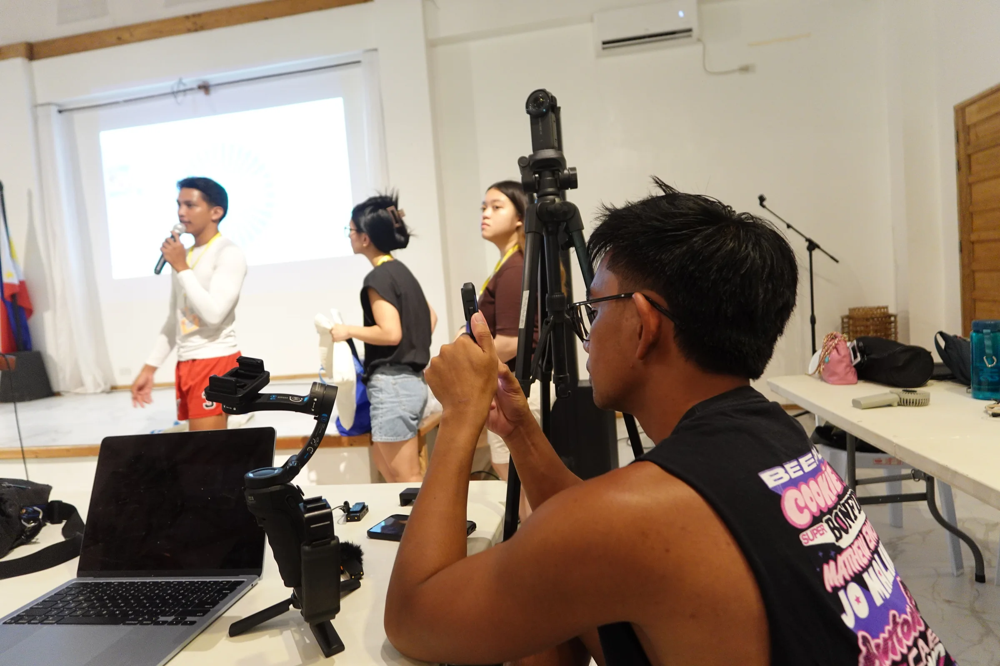
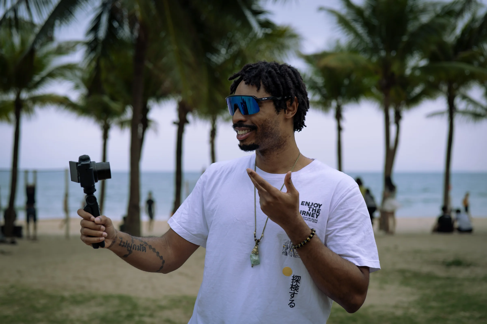
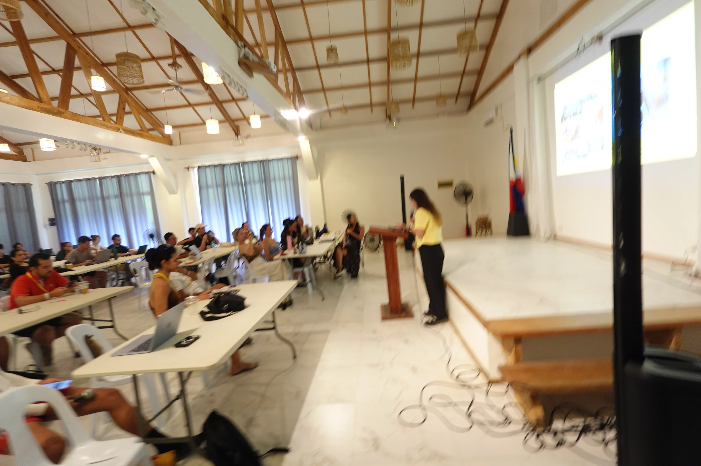

Events
The media team for nomad fests and founder events
KhunShawn and his crew film, edit and post events for organizers and the founders attending them. 2026 so far: the on-site media team at Nomads in Paradise in Siargao (Oct 16 to 25), and videography and interviews at Da Nang Nomad Fest.
What we deliver
Everything an event needs to be seen after it ends
Daily recap video
A short video of each day, so the people who could not be there still feel it.
Founder interviews
Short on-camera conversations with the founders and business owners at the event.
Speaker and attendee photos
Photos from the talks and the floor, handed to the organizers and the people in them.
Vertical clips
Cut for Reels, TikTok and Shorts, ready to post while the event is still on.
A best-of reel
One reel at the end that pulls the whole event together.
How it works
On site, uploaded the same night
1. On-site crewOur crew is at the event, filming as it happens.
2. Same-night uploadFootage goes into a shared folder the same night.
3. First edits in 48 hoursThe first edits go out within 48 hours.

The film
What we make on site
Da Nang, Vietnam
Da Nang Nomad Fest
Videography and interviews with the content team at Da Nang Nomad Fest. These are the words of the people who worked with KhunShawn there.

"Shawn brought a powerful mix of creativity, initiative, and leadership to the content team at Da Nang Nomad Fest."
"The footage and audio turned out beautifully and really captured the feeling of the event."
Proof
See it running now
We were on site at Siargao Nomad Fest, Oct 16 to 25, 2026. Here is the work.

Siargao Nomad Fest daily recaps
The festival hub: every day, one recap.
Day 1, Fri Oct 16: Opening night by the water
Siargao Nomad Fest opened on Friday, Oct 16 with an opening party by the water. Our crew was filming from the start.
Day 2, Sat Oct 17: Yoga and a Hyrox-style workout
Saturday, Oct 17 was the fitness day at Siargao Nomad Fest: a yoga class at a local studio and a Hyrox-style session at a local gym.
Day 3, Sun Oct 18: Island hopping day
Sunday, Oct 18 was island-hopping day at Siargao Nomad Fest: a boat out of General Luna, a white-sand beach and lunch on the sand.
Day 4, Mon Oct 19: Conference day at Isola Del Sole
Monday, Oct 19 was the first conference day at Siargao Nomad Fest, with talks on AI and building a business. Shawn spoke at 10:00.
Day 5, Tue Oct 20: Conference day two: work, health and money
Tuesday, Oct 20 was the second conference day at Siargao Nomad Fest, with talks on travel, work-life balance, health and money.
Day 6, Wed Oct 21: Conference day three: content, money and remote work
Wednesday, Oct 21 was the third conference day at Siargao Nomad Fest, with talks on content, investing and working across cultures.
Day 7, Thu Oct 22: The last conference day, then Unconferences
Thursday, Oct 22 was the last conference day at Siargao Nomad Fest, with morning talks and an afternoon of Unconferences.
Day 8, Fri Oct 23: Wellness Day: sunrise yoga to a pool party
Friday, Oct 23 was Wellness Day at Siargao Nomad Fest: sunrise yoga, a beach sports day, an ice bath and a pool party.
Day 9, Sat Oct 24: Beach day: island trips, a tournament and a foam party
Saturday, Oct 24 was the beach day at Siargao Nomad Fest: optional island trips, a morning tournament, a biohacking night and a foam party.
Day 10, Sun Oct 25: Closing day: one last island trip and the Closing Party
Sunday, Oct 25 was the final day of Nomads in Paradise 2026 in Siargao, with optional island trips and the Closing Party.
Book us for your event
Running a nomad festival or a founder event? Tell us the event and the dates and we will come back with how we would cover it.
Book us for your event →For attendees
Were you at Siargao Nomad Fest?
Sign up for your free festival photos while the form is open. The sign-up button appears here from Oct 16 to Oct 31, and the festival page has the latest.
Get your free festival photos Go to the festival page →Questions
Event media, answered
Planning an event?
Tell us the event and the dates and we will reply within one business day.
Who is the media team for Nomad Fest?
Khun Camp is the on-site media team at Nomads in Paradise Siargao 2026, Oct 16 to 25. A 5-person crew films daily recaps, interviews and speaker photos.
What does an event media team deliver?
Daily recap videos, founder interviews, photos, and vertical clips for Reels, TikTok and Shorts, plus a best-of reel at the end.
How fast do you deliver event footage?
Footage is uploaded the same night and first edits go out within 48 hours.
Can you film a nomad festival or founder event outside the Philippines?
Yes, Khun Camp works across Southeast Asia, including Vietnam and Thailand.
How do I book Khun Camp for my event?
Use the contact page at khuncamp.com/contact and mention the event and dates.
Where can attendees get their photos?
Attendees of Siargao Nomad Fest can sign up for free festival photos through the form on khuncamp.com/siargao.